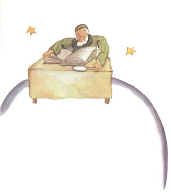

第六颗行星则要大十倍。上面住着一位老先生，他在写作大部头的书。

“瞧！来了一位探险家。”老先生看到小王子时，叫了起来。
小王子在桌旁坐下，有点气喘吁吁。他跑了多少路啊！
“你从哪里来的呀？”老先生问小王子。
“这一大本是什么书？你在这里干什么？”小王子问道。
“我是地理学家。”老先生答道。
“什么是地理学家？”
“地理学家，就是一种学者，他知道哪里有海洋，哪里有江河、城市、山脉、 沙漠。”
“这倒挺有意思。”小王子说。“这才是一种真正的行当。”他朝四周围看 了看这位地理学家的星球。他还从来没有见过一颗如此壮观的行星。
“您的星球真美呀。上面有海洋吗？”
“这我没法知道。”地理学家说。
“啊！”小王子大失所望。“那么，山脉呢？”
“这，我没法知道。”地理学家说。
“那么，有城市、河流、沙漠吗？”
“这，我也没法知道。”地理学家说。
“可您还是地理学家呢！”
“一点不错，”地理学家说，“但是我不是探察家。我手下一个探察家都没 有。地理学家是不去计算城市、河流、山脉、海洋、沙漠的。地理学家很重要， 不能到处跑。他不能离开他的办公室。但他可以在办公室里接见探察家。他询问 探察家，把他们的回忆记录下来。如果他认为其中有个探察家的回忆是有意思的， 那么地理学家就对这个探察家的品德做一番调查。”
“这是为什么呢？”
“因为一个说假话的探察家会给地理书带来灾难性的后果。同样，一个太爱 喝酒的探察家也是如此。”
“这又是为什么？”小王子说。
“因为喝醉了酒的人把一个看成两个，那么，地理学家就会把只有一座山的 地方写成两座山。”
“我认识一个人，他要是搞探察的话，就很可能是个不好的探察员。”小王 子说。
“这是可能的。因此，如果探察家的品德不错，就对他的发现进行调查。”
“去看一看吗？”
“不。那太复杂了。但是要求探察家提出证据来。例如，假使他发现了一座 大山，就要求他带来一些大石头。”
地理学家忽然忙乱起来。
“正好，你是从老远来的么！你是个探察家！你来给我介绍一下你的星球吧！”
于是，已经打开登记簿的地理学家，削起他的铅笔来。他首先是用铅笔记下 探察家的叙述，等到探察家提出了证据以后再用墨水笔记下来。
“怎么样？”地理学家询问道。
“啊！我那里，”小王子说道，“没有多大意思，那儿很小。我有三座火山， 两座是活的，一座是熄灭了的。但是也很难说。”
“很难说。”地理学家说道。
“我还有一朵花。”
“我们是不记载花卉的。”地理学家说。
“这是为什么？花是最美丽的东西。”
“因为花卉是短暂的。”
“什么叫短暂？”
“地理学书籍是所有书中最严肃的书。”地理学家说道，“这类书是从不会 过时的。很少会发生一座山变换了位置，很少会出现一个海洋干涸的现象。我们 要写永恒的东西。”
“但是熄灭的火山也可能会再复苏的。”小王子打断了地理学家。“什么叫 短暂？”
“火山是熄灭了的也好，苏醒的也好，这对我们这些人来讲都是一回事。” 地理学家说，“对我们来说，重要的是山。山是不会变换位置的。”
“但是，‘短暂’是什么意思？”小王子再三地问道。他一旦提出一个问题 是从不放过的。
“意思就是：有很快就会消失的危险。”
“我的花是很快就会消失的吗？”
“那当然。”
小王子自言自语地说：“我的花是短暂的，而且她只有四根刺来防御外侮！ 可我还把她独自留在家里！”
这是他第一次产生了后悔，但他又重新振作起来：
“您是否能建议我去看些什么？”小王子问道。
“地球这颗行星，”地理学家回答他说，“它的名望很高……”
于是小王子就走了，他一边走一边想着他的花。